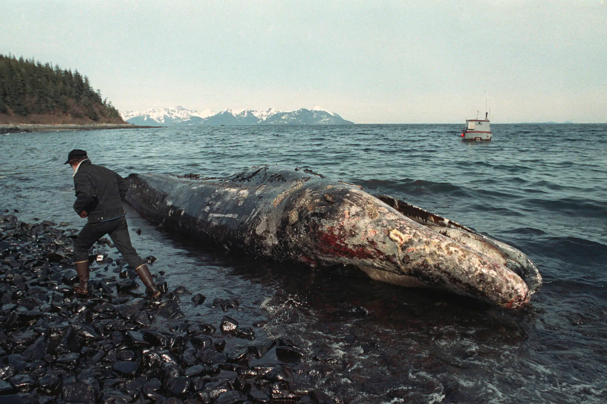

The Exxon Valdez Oil Spill
The Grounding on Bligh Reef: On the night of March 24, 1989, the Exxon Valdez, a massive supertanker carrying over 50 million gallons of crude oil, navigated through the treacherous, ice-filled waters of Prince William Sound, Alaska. In a catastrophic chain of human errors, the ship deviated from the standard shipping lanes to avoid ice. Due to severe crew fatigue, failed navigational tracking, and a captain who had reportedly been drinking and had left the bridge in the hands of an uncertified third mate, the ship failed to correct its course. Shortly after midnight, the tanker violently struck the jagged underwater rocks of Bligh Reef, tearing open its single-layered hull.

The Black Tide: The collision unleashed an estimated 11 million gallons of thick, heavy crude oil into one of the most pristine and biologically rich marine ecosystems on the planet. A delayed and severely inadequate initial cleanup response allowed the oil slick to spread rapidly, eventually covering thousands of square miles of ocean and coating over 1,300 miles of rugged, remote coastline.
The immediate ecological toll was staggering. The toxic sludge suffocated and poisoned the local wildlife, killing an estimated 250,000 seabirds, 2,800 sea otters, 300 harbor seals, billions of salmon and herring eggs, and dozens of bald eagles and orcas.
Key Facts
Date: March 24, 1989
Location: Prince William Sound, Alaska
Casualties: Devastating loss of marine wildlife (hundreds of thousands of animals dead); 1,300 miles of coastline polluted; severe, multi-generational economic damage to local fisheries
Cause: Human error, navigational failure, crew fatigue, and a lack of corporate oversight leading to the tanker striking a reef
The Lasting Scars: The disaster fundamentally destroyed the livelihoods of local indigenous communities and commercial fishermen. Even with billions of dollars spent on cleanup efforts involving high-pressure hot water washing—which inadvertently killed the surviving microbial life on the beaches—the environment did not easily bounce back. Decades later, un-degraded crude oil can still be found trapped just inches beneath the surface of Alaskan beaches, continuing to affect the local food web.
The Exxon Valdez tragedy exposed the shocking inadequacy of maritime safety protocols and the catastrophic cost of human negligence combined with massive industrial operations. The massive public outrage catalyzed swift legislative action, directly leading to the Oil Pollution Act of 1990, which mandated that all new oil tankers operating in U.S. waters be built with double hulls to prevent a grounding from easily puncturing the cargo tanks.